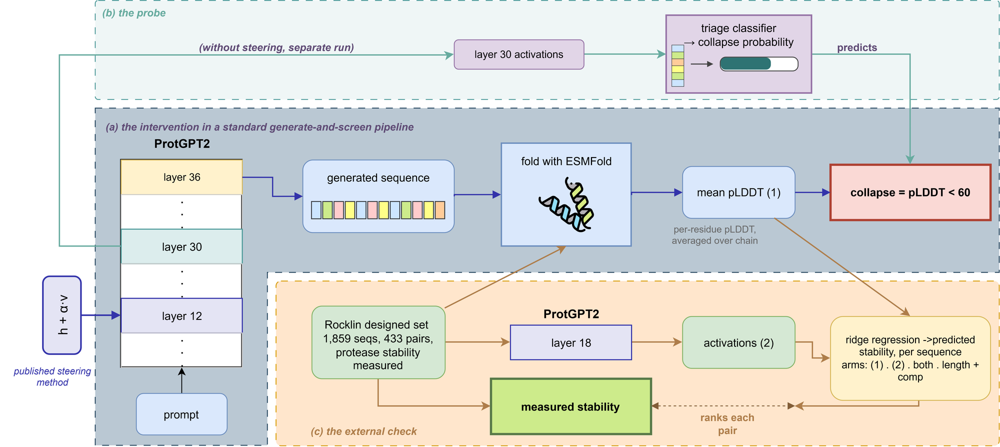

NeurIPS 2026 Workshop on AI for Drug Discovery — Bridging the Translation Gap
Dwarkadas J. Sanghvi College of Engineering, Mumbai, India
*Equal contribution.
A generate-and-screen pipeline has two moving parts: an intervention that shapes generation, and a cheap readout that decides what is worth folding. We audit one of each.
Protein generate-and-screen pipelines use interventions and readouts to select candidates, but rarely test whether these track their intended targets. We audit published repetition steering, ESMFold confidence, and an activation readout. Steering preserves confidence at its operating point, but a fitted cliff follows at α50 = 1.240× (sweep's own control: 64.0%). Direction matters at moderate matched-norm push, but not at saturation. Unsteered generator activations predict the confidence gate (ROC-AUC 0.786 ± 0.004), supporting cost-aware, model-specific triage. We also replicate established length sensitivity, through which shortening can manufacture false nulls. Yet on composition- and length-matched design–scramble pairs, no balanced-accuracy interval excludes chance for experimental stability. Predicting the gate does not establish foldability. We should test what a readout measures before using it to select.
We introduce no new method. The contribution is the audit.

The poster goes here once it is made for Sydney, 11 December 2026.
@inproceedings{shah2026confessions,
title = {The Confessions of a Protein Language Model: Steering,
Activations, and What Predicted Confidence Cannot Certify},
author = {Shah, Panini and Panchali, Raj and Mody, Pearl and
Sanghvi, Mahek and Narvekar, Meera and Karani, Ruhina},
booktitle = {NeurIPS 2026 Workshop on AI for Drug Discovery},
year = {2026},
note = {Preprint: bioRxiv 10.64898/2026.11.10.765136}
}